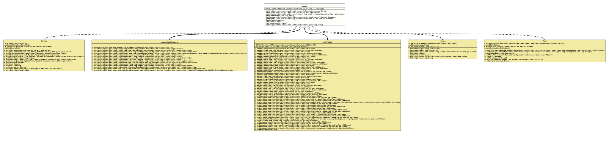

Interface Element
- All Known Subinterfaces:
ProcessingInstruction, XMLElement
- All Known Implementing Classes:
Comment, DocType, ProcessingInstructionImpl, Text, XMLElementAdapter, XMLElementImpl
@ClassVersion(sourceVersion="$Id: Element.java 1158 2026-03-14 16:23:29Z tquadrat $")
@API(status=MAINTAINED,
since="0.0.5")
public interface Element
The definition for an SGML element.
- Author:
- Thomas Thrien (thomas.thrien@tquadrat.org)
- Version:
- $Id: Element.java 1158 2026-03-14 16:23:29Z tquadrat $
- Since:
- 0.0.5
- UML Diagram
-

UML Diagram for "org.tquadrat.foundation.xml.builder.spi.Element"
{kind=link}
-
Method Summary
Modifier and TypeMethodDescriptiongetAttribute(String name) Returns the value for the attribute with the given name.Provides read access to the attributes.default Collection<? extends Element> Provides access to the children for this element; the returned collection is not modifiable.Returns the name of the element.default Collection<Namespace> Provides access to the namespaces for this element; the returned collection is not modifiable.Returns the parent of this element.default booleanReturnstrueif the element has children,falseotherwise.default booleanisBlock()Returns the block flag.<E extends Element>
voidsetParent(E parent) Sets the parent for this element.default StringtoString(int indentationLevel, boolean prettyPrint) Returns a String representation for this element instance.
-
Method Details
-
getAttribute
Returns the value for the attribute with the given name.- Parameters:
name- The attribute name.- Returns:
- An instance of
Optionalthat holds the value for that attribute.
-
getAttributes
Provides read access to the attributes.- Returns:
- A reference to the attributes.
-
getChildren
Provides access to the children for this element; the returned collection is not modifiable.- Returns:
- A reference to the children of this element; if the element does not have children, an empty collection will be returned.
-
getElementName
-
getNamespaces
Provides access to the namespaces for this element; the returned collection is not modifiable.- Returns:
- A reference to the namespaces of this element; if the element does not have namespaces assigned, an empty collection will be returned.
-
getParent
-
hasChildren
Returnstrueif the element has children,falseotherwise.- Returns:
trueif the element has children.
-
isBlock
Returns the block flag.
This flag is used in the conversion of the element into a String; it indicates whether the element is 'inline' (like an HTML <span>) or 'block' (as an HTML <div>). This is important only for elements where whitespace is relevant, like for HTML elements, as pretty printing will add additional whitespace around inline elements that can become visible on parsing (for HTML: on the rendered page).
XML elements for example will be always block as there whitespace is not that important.
Obviously,
trueindicates a block element, whilefalsestands for an inline element.The default is
true.- Returns:
- The flag.
-
setParent
-
toString
-